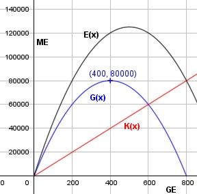

Aufgabe 96 Ein Betrieb hat Grenzkosten von konstant 100 GE. a) Bei welcher verkauften Menge hat er maximalen Gewinn, wenn er mit der Erlösfunktion E(x) = -0,5x2 + 500x arbeitet? b) Zu welchem Preis p bietet er dabei an? a) K' = 100 unabhängig von x --> K(x) muss linear sein K(x) = 100x G(x) = -0,5x2 + 500x - 100x = - 0,5x2 + 400x G'(x) = -x + 400 G''(x) = -1 < 0 --> Hochpunkt -x + 400 = 0 | +x x = 400 ME G(400) = -0,5 * 4002 + 400 * 400 = 80 000 GE Bei einer verkauften Menge von 400 entsteht maximaler Gewinn. b) E(x) -0,5x2 + 500x p(x) = ------ = --------------- = -0,5x + 500 x x p(400) = -0,5 * 400 + 500 = 300 GE/ME
